R1 预览全屏覆盖层 · R2 缩放系统 · R3 画布高度自适应 · R4 上下文工具条 · R5 图标化 · R7/R8 属性区折叠与盒模型
结论：批次 1 的四项用户可见缺陷全部消除，且都能用一帧截图直接指认。最硬的一条是预览——改造前预览帧的
rect=[0,720,1280,600]，落在视口下沿之外，可见高度 0/720px；改造后同一动作下
可见 592/720px。其次是画布高度：改造前固定 600px，1440×900 视口下白留
194px；改造后恒定只留 50px（该 50px 是画布下沿行「面包屑 + 缩放控件」占位，不是死白）。
| 场景 | 视口 | 改造前 | 改造后 | 判定 |
|---|---|---|---|---|
| A 画布高度 · 默认态 | 1280×720 |
画布 1248×600（固定）· 下沿留白 14px |
画布 1248×564 · 下沿留白 50px |
已修 |
| B 画布高度 · 双面板全开 | 1440×900 |
画布 768×600（固定）· 下沿留白 194px |
画布 768×744 · 下沿留白 50px |
已修 |
| C 选中元素 | 1280×720 |
画布 608×600 · 外壳纵向溢出 22px |
画布 608×520 · 无溢出 · 画布 y 150→150 位移 0 |
已修 |
| D 预览 | 1280×720 |
帧 rect=[0,720,1280,600] · 可见高度 0/720px · 外壳被顶出 600px |
覆盖层 1280×672 · 帧 [16,112,1248,592] · 可见 592/720px |
已修 |
| F 缩放 · 窄视口 | 1024×768 |
渲染视口宽 352px（只见版面 29%） | zoom=0.29 → 渲染视口宽 1214px（101%） |
已修 |
| E 预览设备档位 | 1280×720 |
不存在 | 切平板 → 帧 768×592，可见 592px |
新增 |
| G 属性区折叠分组 | 1440×900 |
无 .ep-section |
3 组（text / box / deco） |
新增 |
改造前预览帧被排在 .ep-main 之后，而后者 flex:1 1 auto 撑满视高 —— 帧从 y=720
起渲染，整块落在首屏之外。用户点「预览」的实际感受是：画布消失、屏幕空白。
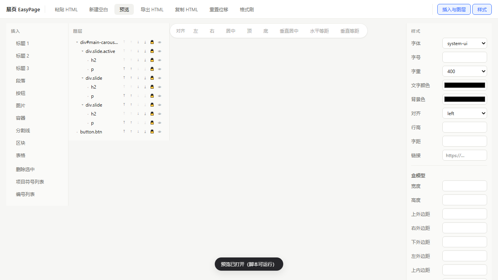
rect=[0,720,1280,600]，外壳纵向溢出 600px。预览确实「打开了」，只是永远在屏外。
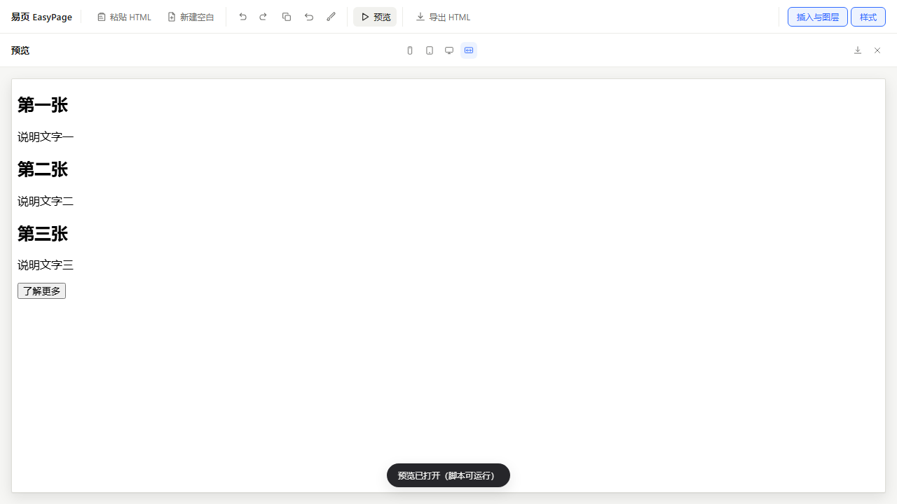
1280×672，从顶栏下方铺开（顶栏保留可点，因为「预览」按钮本身就是开关）。
顺带修掉的状态时序：原实现里 previewOpen 要等帧 load 完才置位，而覆盖层已同步可见
—— 「刚点开就再点一次」会读到 false 又走打开分支，表现为「点关关不掉」。现改为状态与覆盖层同步翻转，
Esc 判据也改用覆盖层自身状态。
改造前 #ep-canvas-frame 写死 600px 高。1440×900 下画布仍是 600，剩余 194px 全成死白；
视口再高只会更浪费。
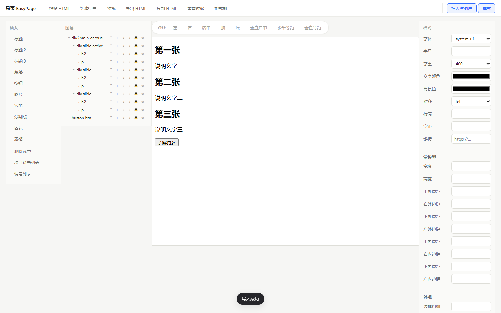
768×600，下方 194px 没有任何内容的死白。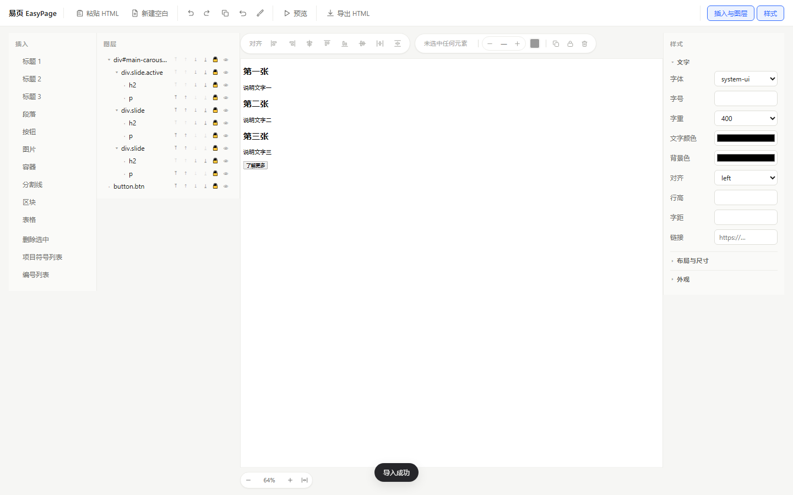
768×744，吃满可用高度，只留 50px 给下沿行。
根因值得记一笔：.ep-main 是横向 flex 容器，子项的「高度」属交叉轴。原写法
align-items:flex-start 把整条高度链断在这里，height:100% 落到高度未定的父级、按规范视为
auto，iframe 回落到固有高度 150px。修复的核心不是改数字，是把两处交叉轴改回 stretch，
同时让三块侧边面板用 align-self:flex-start 显式退出拉伸（它们的高度语义是「内容高 + 上限」，
与画布的「吃掉全部余量」是两回事）。
口径说明：1280×720 下改造后画布为 564px，比改造前的固定 600px 略矮 36px —— 这是「保证任何视口都不溢出」
换来的一致性，同一档位下改造前会溢出 22px（见场景 C）。
缩放不是「把 iframe 缩小」，而是 layoutW = 容器宽 / zoom 配 transform:scale(zoom)：
视觉占位恒等于容器宽，渲染视口变宽。1024×768 且双面板全开时容器只有 352px 宽。
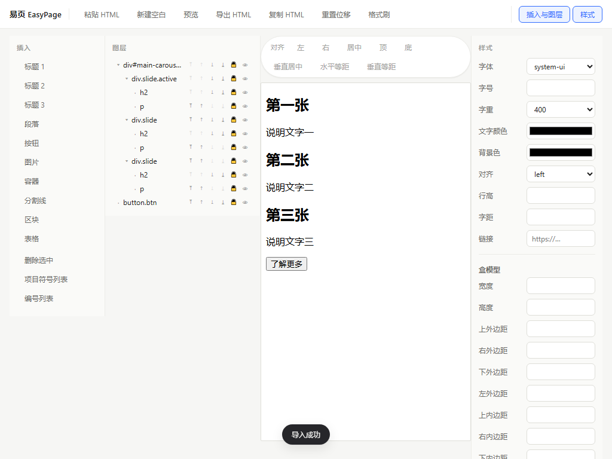
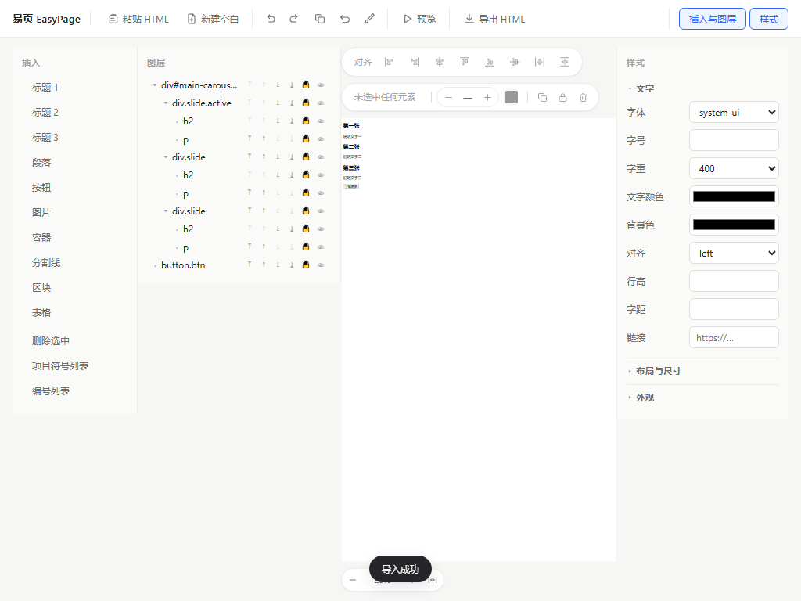
zoom=0.29，整幅 1200px 版面缩进 352px 容器，一眼看全。
100% 的回归保障：缩放比写在 frame.dataset.zoom，100% 时删除该属性并清空
transform 与内联尺寸 —— 与改造前逐像素一致。因此 zoomOf() 只认这一个来源，
绝不用 boundingClientRect 反推（含 transform，且带亚像素误差）。
上下文工具条（R4）落在画布上沿而不是浮在选中框上 —— 画布上任何绝对定位浮层都会盖住 e2e 会点的坐标。
提示文案宽度变化曾触发工具条换行翻转，让画布整体上跳 44px，进而使双击的两次 mousedown 落在不同元素上。
现给提示定宽 88px + 省略号（完整值挂 title）。
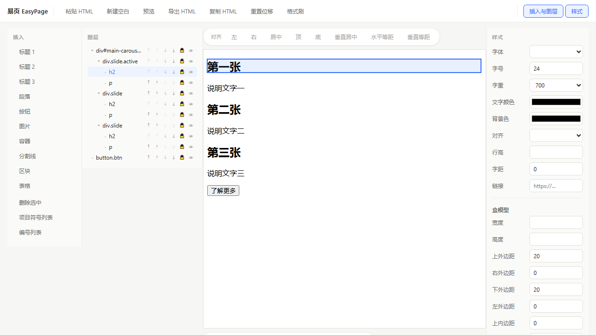
608×600，外壳纵向溢出 22px。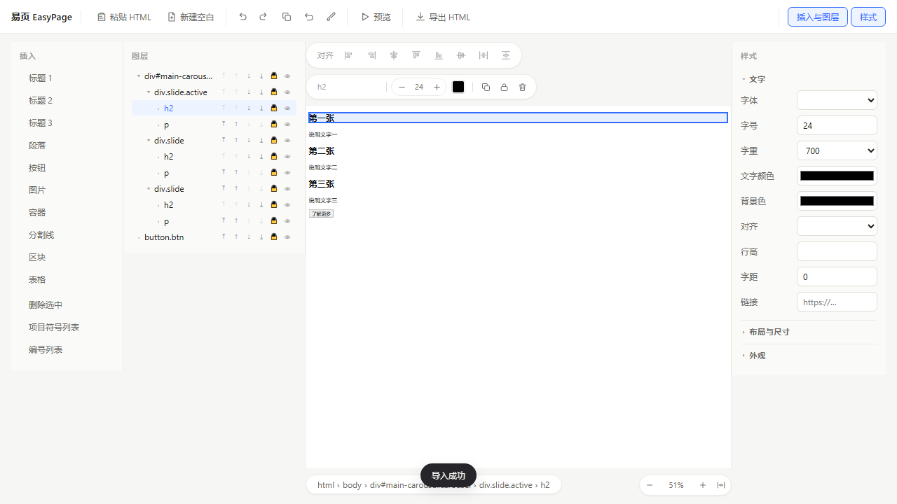
82→82，画布 y 150→150，选中不改变布局。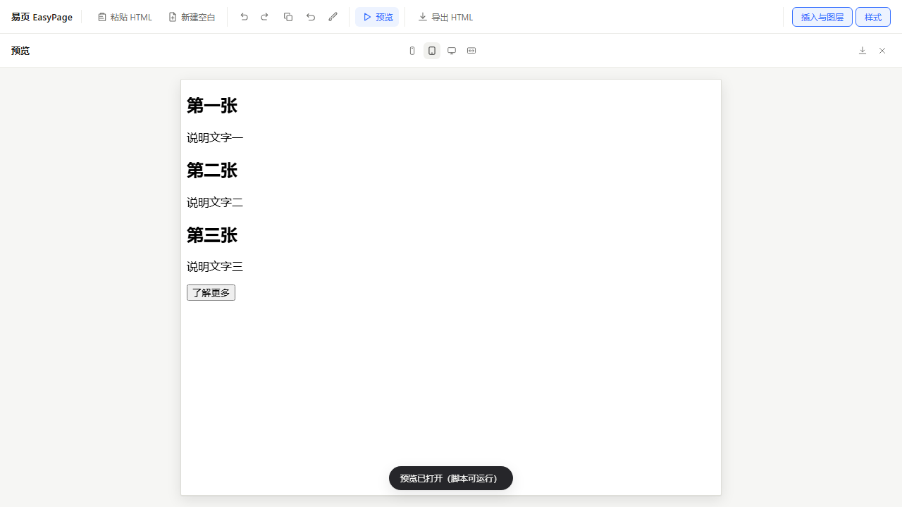
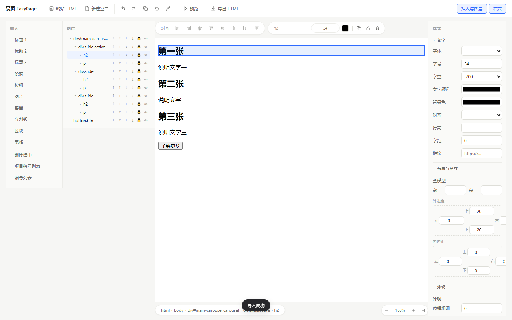
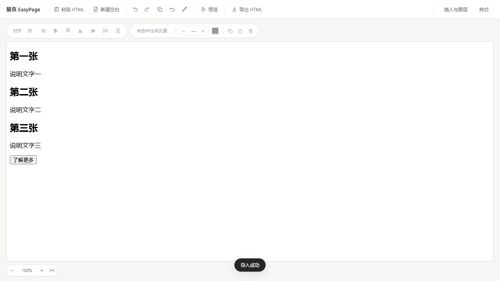
npx vite build && cp dist/index.html qa/report/ui-refactor-p1/after.html
git archive 导出目标提交到临时目录、挂 node_modules 目录联接、
就地构建后另存 —— 当前工作树一个字节都不动：
node qa/probes/baseline-build.mjs dde3df4 before qa/report/ui-refactor-p1
node qa/audit/batch1-evidence.mjs qa/report/ui-refactor-p1/after.html qa/report/ui-refactor-p1 after node qa/audit/batch1-evidence.mjs qa/report/ui-refactor-p1/before.html qa/report/ui-refactor-p1 before
node qa/probes/batch1-debug.mjs
机读清单：after-evidence.json / before-evidence.json。场景 E / G 在基线版没有对应 DOM
（无设备档位、无折叠分组），记 SKIP 属预期，不是失败。
Record<IconName, string> 全量常量，打包器摇不掉树。若要收回，需改成按需函数或把路径拆成独立模块。
docs/plan/07-插件化改造方案.md（tag pivot-extension-20260922）提出把产品形态从独立应用
转向浏览器插件，含 4 个未决硬分叉。若最终转向，本批次里的
PreviewOverlay + ZoomController + core/interaction/zoom 约 359 行会白做。
建议：保留 commit 不回滚，批次 2/3 在形态定案前不开工。
src/app/style/app.css 头部的「稳定契约」注释，改名即回归。
{kind=link}
{kind=link}
{kind=link}
{kind=link}
{kind=link}
{kind=link}
{kind=link}
{kind=link}
{kind=link}
{kind=link}
{kind=link}